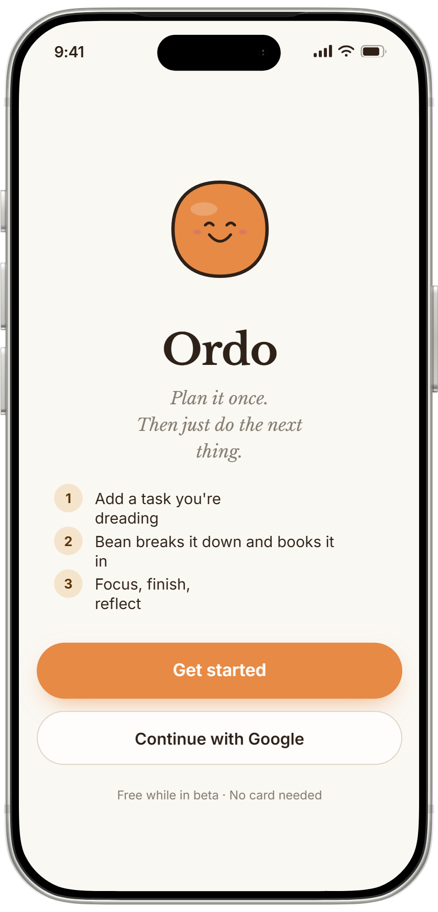
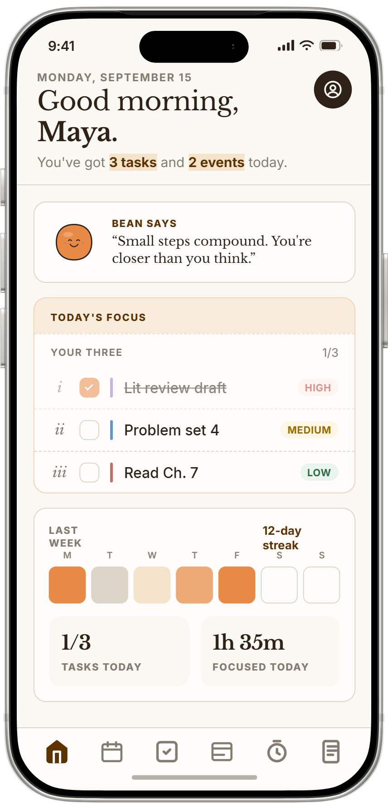
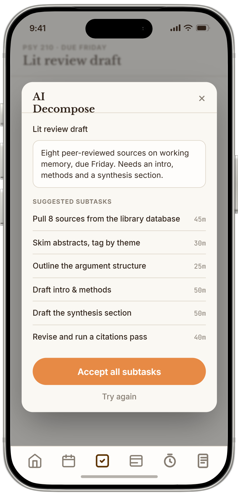
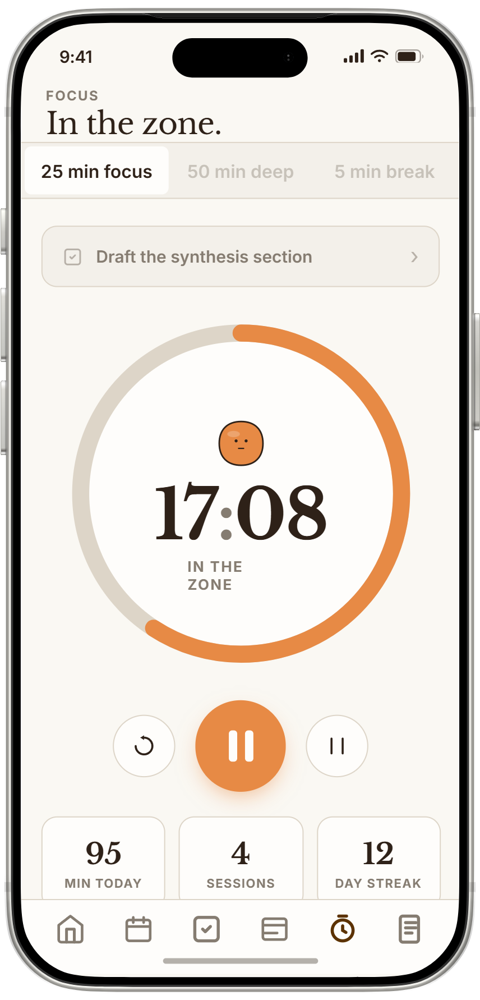
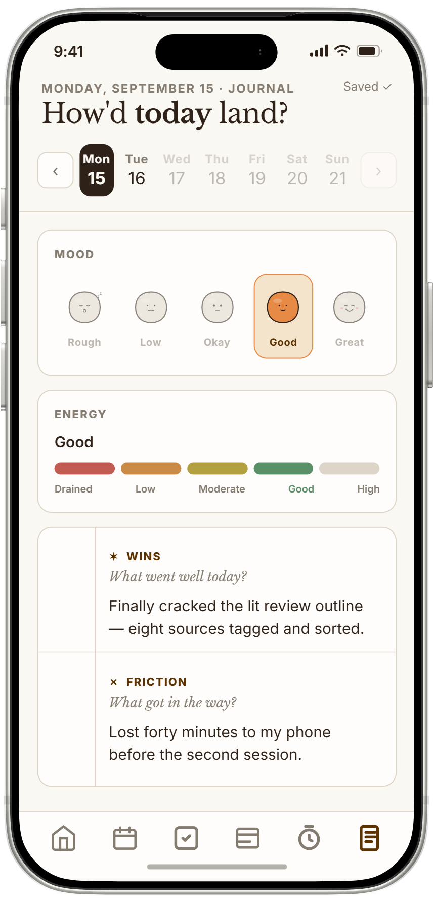
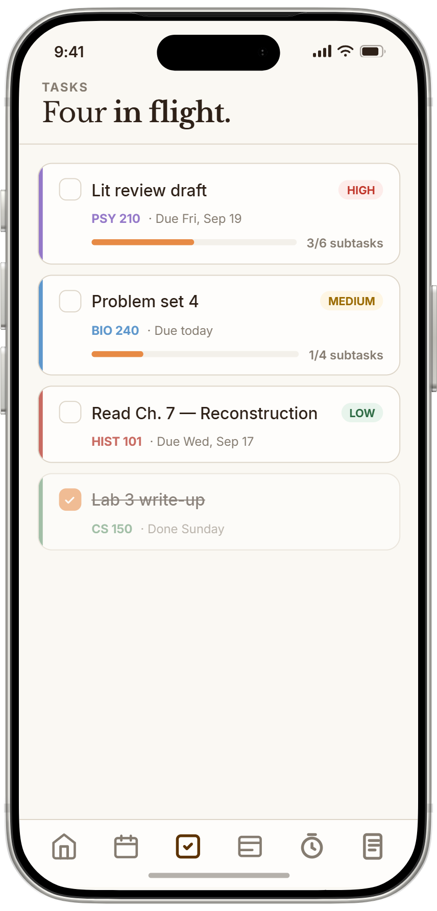

Overview
Ordo takes your whole course load and turns it into an actual daily plan. It reads your syllabi, breaks assignments into smaller subtasks, and slots them into your real schedule (class blocks, focus windows, deadlines you're dreading). Every morning you get the Daily Three: the only three things you actually need to do today.
Inside Ordo
The whole app is six screens. I wanted it to feel like a notebook, not a dashboard, so it's warm and paper-toned with a serif font for anything you're actually supposed to sit and read. Bean (the little guy) reacts to your day instead of judging it.
The six screens

Onboarding
Three promises and one button.

Overview
The Daily Three, a streak, a briefing.

AI decompose
Six subtasks with honest estimates.

Focus
One subtask, twenty-five minutes.

Journal
Mood, energy, three prompts.

Tasks
Every task with its own runway.
Bean, in six moods
A 60-second walkthrough, start to finish on one assignment
# Seen an identical task before? Return the saved breakdown, skip the model.
fp = _fingerprint(task["title"], task.get("due_date"), body.description, file_head)
cached = sb.table("decompose_cache").select("result").eq("fingerprint", fp).maybe_single().execute()
if cached and cached.data:
return DecomposeResponse(subtasks=[SubtaskSuggestion(**s) for s in cached.data["result"]])
consume_ai_credit_or_429(user_id)
# A syllabus PDF can run 30k+ tokens. Score its paragraphs against this task
# and keep only the most relevant bits: cheaper calls, sharper subtasks.
context = _filter_task_context(extracted_file_text, title=task["title"],
course_name=course_name, description=body.description)
# Haiku handles most tasks; fall back to Sonnet only when it struggles.
# The shared system prompt is marked for prompt caching to cut repeat cost.
subtasks = call_ai_with_retry(
ai,
model=ANTHROPIC_MODEL_HAIKU,
fallback_model=ANTHROPIC_MODEL_SONNET,
system=make_cached_system(SYSTEM_PROMPT),
messages=_build_user_prompt(task, context, decomposition_style, target),
parse_fn=_parse_subtasks,
)
# Memoize so the next identical request is free.
sb.table("decompose_cache").upsert({"fingerprint": fp, "user_id": user_id,
"result": [s.model_dump() for s in subtasks]}).execute()The Problem
Every student productivity app I tried made the same mistake: it treats every hour like it's the same hour. Monday at 10am and Thursday at 9pm look identical on a calendar, but they're not even close. One's right before a 300-person lecture, the other's the night before a midterm. A regular to-do list has no idea, and if a scheduling tool doesn't get that either, it's not really scheduling anything.
The other problem is the gap between knowing you have a lot to do and actually starting. Every student already knows their list is long. The anxious part is not knowing what to open first, especially when your schedule changes every week. I wanted Ordo to close that gap, not just dump a list on you, but actually tell you what to do today and why.
Highlights
- 01
AI decomposition plus a scheduler that actually respects your real week: class blocks, how much you can realistically focus, deadlines. It's not a to-do list, it's a plan that fits.
- 02
Upload your syllabus during onboarding and Claude pulls out every assignment and due date for you. No manual entry.
- 03
Every morning you get an AI briefing: what matters today, how your week's going, one actual suggestion. Cached per day so it's fast and doesn't burn through API credits.
- 04
Built-in Pomodoro timer that tracks time per subtask, logs sessions, and counts your streak. Keeps planning and actually doing close together.
- 05
Journal entries are encrypted at rest (Fernet, with key rotation). The AI briefing only ever sees your mood and energy, never what you actually wrote.
Architecture
Clients hit Postgres directly for basic reads and writes, locked down with row-level security. The FastAPI backend only exists for the stuff a client shouldn't be trusted with: calling Claude, running the scheduler across your whole task graph, and syncing your calendar.
Clients
bearer
Service
per-user AI quota
role
Data & AI
Under the Hood
The scheduler is really the core of Ordo. It takes your tasks, already broken into subtasks with time estimates by Claude, and fits them into your week around class blocks, focus windows, daily capacity, and hard deadlines. It also pulls in your Google Calendar over read-only OAuth, so anything already on there counts as busy time. It reruns on every login, so the plan keeps adjusting as you finish things or fall behind.
Claude's other job is reading, not just decomposing. During onboarding it parses your syllabus PDFs and pulls out the whole course schedule, dates, weights, recitation times, so you don't type any of it in yourself. The briefing works the same way but is cached per user per day: the first request generates it, everyone after that just reads the cache.
"Honestly, the scheduling algorithm was the easy part. Getting the Daily Three to feel trustworthy enough that I'd actually listen to it took way longer."
Reflection
The most surprising part of building Ordo was realizing what the actually hard problem was. I thought it'd be the scheduling algorithm. It wasn't, constraint solving is a pretty solved problem at this point. The hard part was trust. If you look at your Daily Three and think "that's not what I should be doing today," the whole thing falls apart. Getting the priority logic right, especially for the long-horizon projects that shouldn't show up until they actually need to, took way more iteration than anything else.
One decision I'm glad I made early: the journal is encrypted at rest with key rotation, and the AI briefing only ever sees mood and energy, never what you actually wrote. I could've cut that corner. Didn't.
Tech Stack